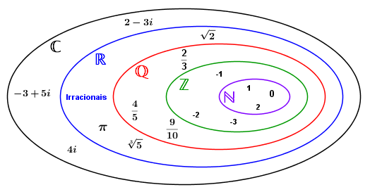

Introdução
O que são conjuntos?
Na teoria dos conjuntos, três noções são aceitas como primitivas, ou seja, o fundamento:
- Conjunto
- Elemento
- Pertinência entre elemento e conjunto
- Conjunto das vogais
- Conjunto dos livros de um gẽnero em específico
- Conjunto de ovelhas para serem podadas
- Entre outros.
Elementos são, em sua essência, qualquer coisa que tenha uma definição existencial, literalmente. Podemos definir qualquer coisa para serem considerados elementos: Um carro, um número, uma figura, etc... Os conjuntos irão agrupar os elementos com base em alguma exigência (Conjunto dos livros, dos números, das figuras...)
A relação de pertinência entre elementos e conjuntos é simples:
O elemento está ou não está em um conjunto?
Esta simples dúvida pode nos ajudar a compreender esse conceito. No conjunto dos livros, Hamlet está nele, ou seja, Hamlet pertence ao conjunto dos livros.
Matematicamente, um elemento pertencer ou não a um conjunto é denotado por:
Seja A um conjunto quaisquer tal que A = {1, 2, 3, 4, 5, 6};
- É válido afirmarmos que: 1 ∈ A (1 pertence em A).
- É inválido afirmarmos que: 7 ∈ A (7 pertence em A).
Conjuntos Numéricos
Os conjuntos numéricos são nada mais nada menos do que números com propriedades diferentes, tendo denominações diferentes.
Os conjuntos numéricos podem ser divididos em:
- N = Conjunto dos Naturais = {1, 2, 3, 4, 5, 6 ... + ∞}
- Z = Conjunto dos Inteiros = { - ∞, ..., -2, -1, 0, 1, 2, 3, ..., + ∞}
- Q = Conjunto dos Racionais = Todos os números que podem ser representados como fração.
- I = Conjunto dos Irracionais = Todos os números decimais infinitos que não podem ser representados por frações. (Ex: e, π)
- R = Conjunto dos Reais = Todos os números citados anteriormente
- C = Conjunto dos Números complexos
